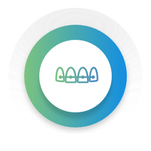

náš tým
VNITŘNÍ ŘÁD ZDRAVOTNICKÉHO ZAŘÍZENÍ
Tento vnitřní řád upravuje práva a povinnosti mezi provozovatelem zdravotnického zařízení a poskytovatelem zdravotních služeb (dále jako „plicní ambulance“) a pacientem plicní ambulance (dále jako „pacient“) při poskytování zdravotních služeb a dalších souvisejících jednání. Pacient byl s vnitřním řádem plicní ambulance seznámen v rámci procesu registrace k poskytování zdravotních služeb v plicní ambulanci, práv a povinností z něj plynoucích jsou si vědomi, s jeho zněním souhlasili a zavazují se jej dodržovat.
- PROVOZNÍ DOBA
- Provozní a ordinační doba je zveřejněna na vstupních dveřích do plicní ambulance a na webových stránkách.
- V případě mimořádných událostí může být ordinační doba upravena, o čemž budou pacienti informováni na webových stránkách nebo u vchodu do ordinace.
- Poslední pacient je ošetřen 30 minut před koncem ordinační doby.
- OBJEDNÁVÁNÍ PACIENTŮ
- Pacient je povinen se na vyšetření v plicní ambulanci vždy předem objednat. Výjimkou jsou urgentní (akutní) případy.
- Objednání termínu je možné cestou kontaktního formuláře na internetových stránkách. Telefonické objednávky jsou možné pouze v průběhu provozní doby
- Při neakutních potížích je pacient povinen předložit žádanku od praktického lékaře nebo jiného odborného lékaře. V případech akutního stavu je možné uskutečnit vyšetření pacienta i bez předchozího objednání či žádanky.
- Plánovaný termín vyšetření sdělený při objednání je předpokládaný. Pacient je povinen dostavit se do plicní ambulance 10 minut před objednaným termínem. Navzdory veškerému úsilí o dodržování plánovaných termínů se může stát, že se čekací doba prodlouží kvůli akutním případům nebo nečekaným komplikacím. Děkujeme za vaši trpělivost a pochopení. V případě zpoždění budou pacienti zdravotnickým personálem informováni o odhadovaném čase čekání.
- Zdravotní sestra pravidelně vychází do čekárny a určuje po dohodě s lékařem pořadí, v jakém budou pacienti vyšetřeni.
- V případě, že se pacient ze závažných důvodů nemůže na plánované vyšetření dostavit, je povinen takovou skutečnost bez zbytečného odkladu, nejpozději však do 24 hodin před objednaným termínem vyšetření, oznámit telefonicky nebo cestou kontaktního formuláře na webu. Dostavení se k objednanému vyšetření je stěžejní pro zajištění efektivního využití času zdravotnického personálu a maximalizace dostupnosti vyšetření pro všechny pacienty. Neomluvené nedostavení se k vyšetření způsobuje výpadky v plánovaném rozvrhu a může bránit v poskytování péče dalším pacientům, kteří vyšetření potřebují a čekají na něj.
- V případě opakovaného nedůvodného či neomluveného nedostavení se k objednanému vyšetření se pacient zavazuje uhradit plicní ambulanci smluvní pokutu ve výši 500 Kč. Výjimku z výše uvedeného tvoří situace, které není možné předem předvídat. Smluvní pokuta je splatná na vyžádání při následném vyšetření v plicní ambulanci.
- PRÁVA PACIENTŮ
- Pacientovi jsou zachována veškerá práva stanovená zejména zákonem č. 372/2011 Sb., o zdravotních službách a podmínkách jejich poskytování (zákon o zdravotních službách).
- Pacient má právo být plně informován o svém zdravotním stavu, možných léčebných metodách, rizicích a vedlejších účincích, alternativních možnostech léčby a očekávaném průběhu léčby. Informace musí být poskytnuty jasným a srozumitelným způsobem, přičemž pacient má právo klást otázky a žádat o další vysvětlení.
- Pacient má právo být předem informován o ceně poskytovaných zdravotních služeb nehrazených nebo částečně hrazených z veřejného zdravotního pojištění a o způsobu jejich úhrady.
- Osobní údaje pacienta a informace o jeho zdravotním stavu jsou chráněny a nesmí být sdělovány třetím osobám bez výslovného souhlasu pacienta, s výjimkou případů stanovených obecně závaznými právními předpisy.
- Pacient má po celou dobu poskytování zdravotních služeb právo na respekt, ohleduplnost a důstojné zacházení bez ohledu na jeho věk, pohlaví, národnost, sociální postavení, nebo zdravotní stav.
- POVINNOSTI PACIENTŮ
- Pacient je povinen pravdivě a úplně informovat ošetřující zdravotnický personál:
- - o dosavadním vývoji svého zdravotního stavu včetně informací o infekčních onemocněních;
- - o poskytování zdravotních služeb jiným zdravotnickým zařízením;
- - o užívaných lécích a léčivých přípravcích;
- - o užívání návykových látek, kouření a to včetně elektronických cigaret či jiných zařízení nahřívajících tabák;
- - a o dalších skutečnostech podstatných pro řádné poskytování zdravotních služeb, přičemž nesplnění této povinnosti je považováno za hrubé porušení vnitřního řádu.
- Pacient je povinen dodržovat individuální léčebný a diagnostický postup navržený a doporučený zdravotnickým personálem.
- V případě probíhajícího respiračního onemocnění vstupuje pacient do plicní ambulance výhradně s ochrannými pomůckami. U vchodu do plicní ambulance jsou k dispozici dezinfekční prostředky na ruce, jejichž použití je povinné.
- Pacient se zavazuje informovat plicní ambulanci o plánovaném operačním zákroku a nezbytnosti provedení předoperačních vyšetření bez zbytečného odkladu po stanovení data operačního zákroku za účelem stanovení obsahu a termínu takového předoperačního vyšetření.
- Pacient je povinen se v prostorách zdravotnického zařízení chovat slušně a ohleduplně vůči ostatním pacientům i zdravotnickému personálu.
- Pacient nesmí vstupovat do prostor plicní ambulance pod vlivem alkoholu nebo jiných návykových látek, shodně jako alkohol nebo návykové látky užívat v prostorech plicní ambulance. Kouření a to včetně elektronických cigaret či jiných zařízení nahřívajících tabák je v prostorech plicní ambulance přísně zakázáno.
- Pacient není oprávněn pořizovat během poskytování zdravotních služeb fotografie, videonahrávky nebo audionahrávky bez výslovného předchozího souhlasu zdravotnického personálu a současně všech dalších osob, jejichž projevy a/nebo podoba by měly být zachyceny.
- Pokud pacient aktivně nebo pasivně neovládá český jazyk, je povinen zajistit přítomnost předkladatele do nebo z jazyka českého.
- Pacient je povinen pravdivě a úplně informovat ošetřující zdravotnický personál:
- PRŮBĚH VYŠETŘENÍ
- Pacient je povinen řídit se pokyny zdravotnického personálu.
- Pacient je povinen prokázat se průkazem zdravotní pojišťovny, popřípadě platným dokladem totožnosti.
- Pacient vstupuje do ordinace výhradně k výzvě zdravotní sestry nebo lékaře. Některá jednodušší vyšetření (např. vyšetření krevního tlaku, odběry, funkční vyšetření plic aj.) mohou být prováděna zdravotní sestrou v sesterně.
- Pacient vstupuje do plicní ambulance v doprovodu maximálně jedné osoby. Pacient se zavazuje informovat takovou osobu o povinnostech plynoucích jí přiměřeně z vnitřního řádu.
- Pacient je povinen bez zbytečného odkladu nahlásit zdravotnickému personálu veškeré změny týkající se osobních údajů a zdravotního pojištění.
- Poskytování zdravotních služeb není zpravidla podmiňováno písemných souhlasem pacienta, vyjma případů stanovených zákonem.
- MIMOŘÁDNÉ EPIDEMIOLOGICKÉ SITUACE
- O mimořádné epidemiologické situaci budou pacienti informováni u vchodu do ordinace, na webových stránkách, popřípadě zdravotnickým personálem.
- ZDRAVOTNICKÁ DOKUMENTACE
- Zdravotnická dokumentace pacienta je majetkem plicní ambulance. Pacient je oprávněn po předchozí domluvě do zdravotnické dokumentace v prostorech plicní ambulanci nahlížet a činit si z ní výpisky a kopie.
- ZÁVĚREČNÁ USTANOVENÍ
- Plicní ambulance je oprávněna odmítnout přijetí pacienta, pokud by bylo překročeno únosné pracovní zatížení nebo jeho přijetí brání provozní důvody, personální zabezpečení nebo technické a věcné vybavení plicní ambulance.
- Plicní ambulance je oprávněna ukončit poskytování zdravotnických služeb pacientovi, který závažným způsobem omezuje práva ostatních pacientů, úmyslně a soustavně nedodržuje navržený individuální léčebný postup, pokud s poskytováním zdravotních služeb vyslovil souhlas, nebo se neřídí vnitřním řádem a jeho chování není způsobeno zdravotním stavem.
- Tento vnitřní řád je platný a účinný od 01. 01. 2024.
- Tento vnitřní řád je zveřejněn na webových stránkách ambulance a k nahlédnutí v ambulanci.